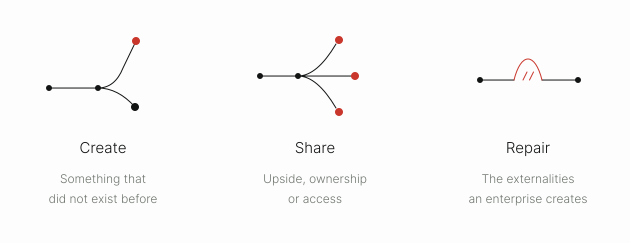
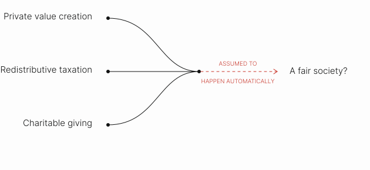
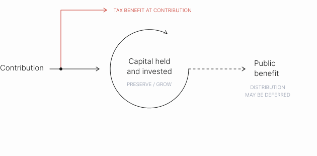
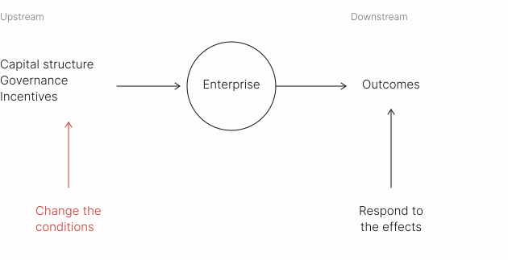
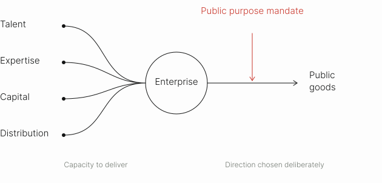
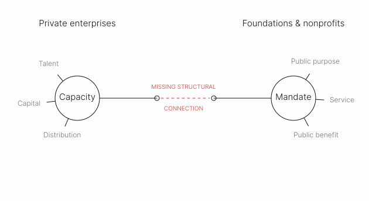
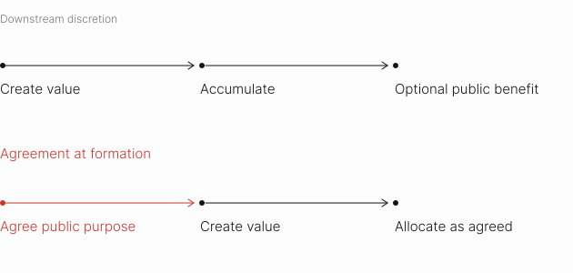

Dynamic Equity
Public Goods at the
Point of Formation
A new asset class in which the investor’s financial return is capped by agreement, and enterprise value beyond that cap is directed toward defined public goods.
- Document
- Whitepaper Science
- Subject
- Dynamic Equity
Part I: Introduction
The State of Public Goods
We are in a crisis of how public goods get created. The crisis is not only economic but conceptual. We’ve lost a working account of what public goods are, who pays for them, and what they owe us.
Centuries of economic theory define public goods by two properties inherent to the good itself. Non-rivalry: one person’s consumption does not diminish what is available to anyone else. Non-excludability: the supplier cannot prevent non-payers from consuming. The definition is precise and useful, but it describes the conditions under which a market fails to reliably supply a good. It does not describe what the good does, why it matters, or who should provide it.
To say we are in a crisis of how public goods get created is an argument about institutional design and incentives rather than a moral or strictly economic one.
What We Mean by Public Goods
This paper does not interrogate the economic argument of public goods exclusively. When we use the phrase, we mean goods, services, and utilities that support overall societal health and wellbeing — be it clean air provisions, a cure for Alzheimer’s, wealth-generating opportunities for employees, or the correction of externalities an enterprise has itself produced.
We recognize that the public should ideally hold authorship over that definition. Our scope is deliberately limited as to not opine on authorship or decisions of allocation.
What we do intend to explore is the mechanism itself. The instrument we present later in this paper generates public goods in three ways: by creating something net new, by changing where upside flows — sharing profit with stakeholders or subsidizing access — or by working against externalities the enterprise generates. The instrument is specific in design and flexible in outcome.

The Settlement That Assumed
Automatic Aggregation
Through the middle of the twentieth century, the state was the primary funder, and at times direct provider, of public goods through taxation and expanded welfare systems.1 Charitable capital was expected to play a residual role: funding experimental or minority causes that the government was structurally unable to support, and gap-filling where the state and market did not reach.2 Corporations created private economic value, and their contribution to the public was assumed to flow indirectly — through wages, taxes paid, and the goods and services they sold.
Beneath the whole arrangement sat one load-bearing assumption: automatic aggregation. Private value creation, plus redistributive taxation, plus charitable topping-up, would net out to a fair society.

That settlement broke because the intermediation faltered.3 As public capacity has thinned and confidence in it has waned,4 and as wealth has concentrated in private hands at a scale without precedent,5 private power has been left holding the position those public institutions used to occupy — controlling the resources whose deployment now determines whether public goods get made — without having chosen that role or built the means to exercise it.6
Philanthropy, meanwhile, has been asked to carry weight it was never built to bear. Philanthropy’s defensible role is to promote pluralism and discovery — decentralizing who gets to define a good and funding long-horizon experiments that neither electorates nor markets can afford. Philanthropy was never designed to supply public goods at scale, and expecting it to do so has contributed to this breakdown.
It has proven insufficient not by the measure of its own activity, which is at record levels, but by the measure that matters: capital has accumulated inside the philanthropic system faster than the problems it was meant to address have improved.7 Because the tax benefit is realized at the moment of contribution, the public benefit is optional and can be indefinitely deferred — by design.8 And the professional apparatus guiding great wealth is compensated on assets under advisement rather than on gifts granted, so the default counsel is to preserve and grow capital rather than to move it.

The deeper issue is structural, not one of volume. The institutions that philanthropy funds — foundations, nonprofits — are built for service delivery and for acting on value after it has been created, extracted, and privatized. They operate at the altitude of the symptom, with no leverage over the capital structures, governance, or incentives of the enterprises that actually generate the value, and the harm, upstream.

Public Goods in the 21st Century
The institution now best equipped to produce public goods is neither the agency nor the foundation. It is the corporation.
The corporation’s capacity to organize talent, compound expertise, distribute at scale, and convert resources into outcomes efficiently has no rival among the institutions we have traditionally charged with the public good; in this moment, the corporate form is simply the most effective public-goods-producing technology available to us.
The shift has already happened. The mechanisms built today determining the wellbeing and protection of the public — AI, biotech, national security, energy generation and storage, grid infrastructure, healthcare distribution — are already being built by private companies with private capital. In each, the choice of what gets built, and for whom, is made inside a private firm.
That this is so is not a triumph but a symptom — a measure of how far the public institutions we built for the purpose have been allowed to erode. And it is a claim about capability, not authority: the corporation is the best engine we have, not the best steer. Left to its own logic it will aim that capacity wherever profit points.

The Result
The result is a double bind. The institutions with the capacity to create public value at scale — operating private enterprises, with their expertise, distribution, talent, and capital efficiency — are governed by a default mandate that treats public benefit as a leakage of the returns they seek to produce. The institutions with the mandate to create public goods — foundations and nonprofits — lack the capital, scale, and market discipline of enterprises.
Capacity without mandate on one side; mandate without capacity on the other.

Large pools of capital sit disconnected from the institutions best positioned to deliver public goods, at the precise moment those goods are most needed — not by accident of circumstance, but by the design of the system that routes value between them.
Public Goods at the Point of Formation
What enterprises lack, then, is not the capability to produce public goods but the license to — a mandate that permits it and capital that asks it to turn that capacity toward public ends. The direction has to come from capital holders deliberately choosing the kind of return they want. But discretion exercised once — by one capital holder or one founder — is not a scalable structure, as it has to be continuously rebuilt alongside each bespoke scenario.9
The missing infrastructure is not a better philanthropy or a more disciplined impact fund. It is the connective tissue between public-minded capital and the corporate form itself — the mechanisms and intermediaries that let asset holders direct capital into enterprises as enterprises, harnessing the very engine that makes them formidable, to produce public goods on purpose rather than by accident.
Public benefit is an afterthought in every existing vehicle because it is decided downstream of value: created, accumulated, and only then, optionally, transferred to the public. With the design of a new instrument, the correction can sit at formation — before the value exists, an obligation can be made by agreement rather than intention.

Private allocation of public goods is already occurring — it is just unstructured. An agreement built at formation is more accountable and efficient than discretion exercised later, if at all.
Citations
- In the US, New Deal institutions set in motion federal relief programs in 1933, social insurance in 1935, collective bargaining law in 1935, and minimum wage regulation in 1938, culminating in the Employment Act of 1946, which established federal policy responsibility for economic conditions. Simultaneously in the UK, the 1945 Attlee government combined nationalized industry with a new welfare state. Ira Katznelson, Fear Itself: The New Deal and the Origins of Our Time (New York: W.W. Norton, 2013); Nicholas Timmins, The Five Giants: A Biography of the Welfare State (London: HarperCollins, 1995) ↩
- Rob Reich presents the pluralism and discovery arguments for philanthropy’s residual role. Rob Reich, Just Giving: Why Philanthropy Is Failing Democracy and How It Can Do Better (Princeton, NJ: Princeton University Press, 2018) ↩
- As the government retreated in response to policies causing erosion of the postwar settlement, it began outsourcing public goods and services to private entities as policy strategy, then subjected those entities to administrative rules that left them chronically underfunded and structurally vulnerable. This is the same capacity constraint the paper argues philanthropy can't outgrow — the sector was built to be dependent, not resourced to lead. LPE Project, "The Origins of the Nonprofit Industrial Complex" (December 2023). ↩
- Only 39% of Americans say the federal government has a positive impact on "people like me,” and 56% consider it "wasteful and inefficient." Capacity has contracted alongside public perception: the federal civilian workforce fell roughly 10% in 2025 — the largest peacetime reduction on record — with grant disbursements slowing and research output down due to staffing cuts. David E. Lewis, "State Capacity and American Power," Carnegie Endowment (2026); GAO-26-108583 (2026). ↩
- Global billionaire wealth reached $18.3 trillion in 2025, up 16% year-over-year and 81% since 2020. Oxfam International, "Resisting the Rule of the Rich" (January 2026). ↩
- Private industry now funds 69.6% of U.S. domestic R&D expenditure, versus 18.9% from all levels of government combined — a reversal from the early 1980s, when public and private R&D funding were roughly equal. American Association for the Advancement of Science, "Research on R&D Funding: The Different Functions of Public and Private R&D" (September 2025), citing OECD data. ↩
- Total private foundation assets grew 15% to $1.68 trillion in 2025, driven by market gains rather than increased giving. DAF Research Collaborative, Annual DAF Report 2025 (Dec. 2025). Total DAF assets hit $326.45B in 2024, up 27.5% from FY2023. Chronicle of Philanthropy, "Foundation Coffers Are Full as Pressure Mounts to Increase Giving" (Oct. 2025); Center for Effective Philanthropy, cited in Forbes, "Whose Money Are Foundations Sitting On" (July 2026). ↩
- DAFs receive more favorable tax treatment than private foundations because donors get an immediate deduction on contribution, independent of when — or whether — the funds ever reach a working charity. Unlike foundations' 5% mandatory annual payout, DAFs face no distribution requirement and can hold funds indefinitely. A foundation can also satisfy its own 5% requirement by donating into a DAF, moving money from a regulated vehicle into an unregulated one. DAF Research Collaborative, Annual DAF Report 2025 (Dec. 2025); Institute for Policy Studies (April 2025). ↩
- Friedman's own objection to only people having social responsibility weakens precisely as ownership concentrates: a founder with majority control is spending resources they alone direct, which by Friedman's own logic should make room for exactly this kind of discretion. What's missing isn't permission to align with social responsibility, it's a vehicle that makes that decision binding and not just personal. ↩